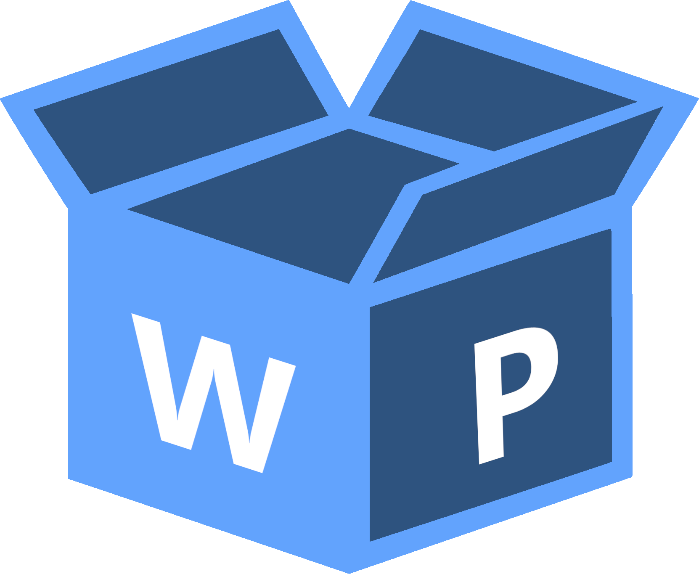

<nav
  [ngClass]="{
    'navbar-blur': navbarScrolled,
  }"
  class="navbar flex justify-content-between align-items-center p-3"
>
  <div class="logo-container flex flex-row align-items-center gap-2">
    <i (click)="sidebarVisible = true" class="pi pi-bars"></i>
    <div
      class="cursor-pointer flex align-content-center justify-content-center flex-wrap"
      [routerLink]="['/']"
    >
      
      <div class="hidden md:flex flex-row text-2xl lg:text-3xl my-auto">
        <div class="wiki">Wiki</div>
        <div class="product">Product</div>
      </div>
    </div>
  </div>
  <div class="flex flex-row gap-2">
    <ng-template #searchBar>
      <form [formGroup]="searchForm" (ngSubmit)="search()">
        <span class="p-input-icon-right">
          <i class="pi pi-search transparent-button-icon"></i>
          <input
            class="transparent-input-text"
            type="text"
            pInputText
            formControlName="query"
          />
        </span>
      </form>
    </ng-template>
    @if (screenService.isLargeScreen){
    <ng-container *ngTemplateOutlet="searchBar"></ng-container>
    }
    <!-- Wishlist button -->
    <button
      (click)="router.navigate(['/wishlist'])"
      class="p-ripple p-element p-button p-component p-button-icon-only transparent-button"
      [pTooltip]="tooltipContent"
      tooltipPosition="bottom"
    >
      <span class="pi pi-heart p-button-icon transparent-button-icon"></span>
    </button>
    <ng-template #tooltipContent>
      <div class="flex align-content-center justify-content-center">
        <span class="font-bold">Wishlist</span>
      </div>
    </ng-template>
    <!-- Toggle Button for Light/Dark theme switching -->
    <button
      (click)="this.isDarkTheme.set(!this.isDarkTheme())"
      class="p-ripple p-element p-button p-component p-button-icon-only transparent-button"
      [pTooltip]="themeTooltip"
      tooltipPosition="bottom"
    >
      <span
        [ngClass]="{
          ' pi-sun': isDarkTheme(),
          ' pi-moon': !isDarkTheme()
        }"
        class="pi p-button-icon transparent-button-icon"
      ></span>
    </button>
    <ng-template #themeTooltip>
      <div class="flex text-center align-items-center justify-content-center">
        <span *ngIf="isDarkTheme()" class="font-bold">Go Light</span>
        <span *ngIf="!isDarkTheme()" class="font-bold">Go Dark</span>
      </div>
    </ng-template>
  </div>
</nav>

<!-- navigation sidebar -->
<p-sidebar [(visible)]="sidebarVisible">
  <div class="py-3">
    @if (!screenService.isLargeScreen){
    <ng-container *ngTemplateOutlet="searchBar"></ng-container>
    }
    <h3>Currency</h3>

    <p-dropdown [options]="currency" [(ngModel)]="currencyService.userCurrency">
      <ng-template let-option pTemplate="selectedItem">
        @if (option){
        <div class="flex align-items-center gap-2">
          <!-- TODO: add icon for country -->

          <div>{{ option }}</div>
        </div>
        }
      </ng-template>
      <ng-template let-option pTemplate="item">
        <div class="flex align-items-center gap-2">
          <!-- TODO: add icon for country -->
          <div>{{ option }}</div>
        </div>
      </ng-template>
    </p-dropdown>

    <h3>Categories</h3>
    <p-tree
      [value]="treeNodes"
      selectionMode="single"
      (onNodeSelect)="onCategorySelect($event)"
    ></p-tree>
  </div>
</p-sidebar>
